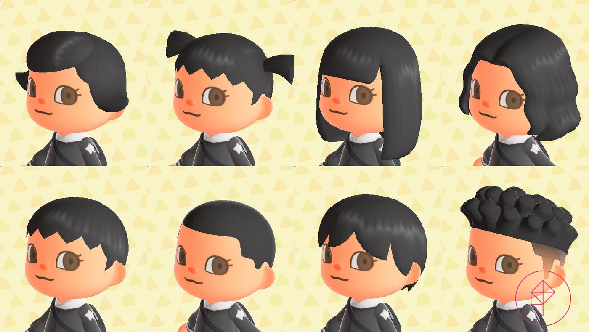
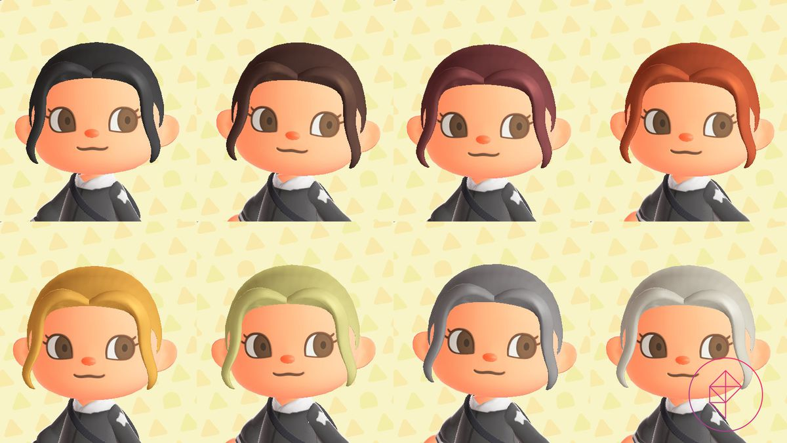
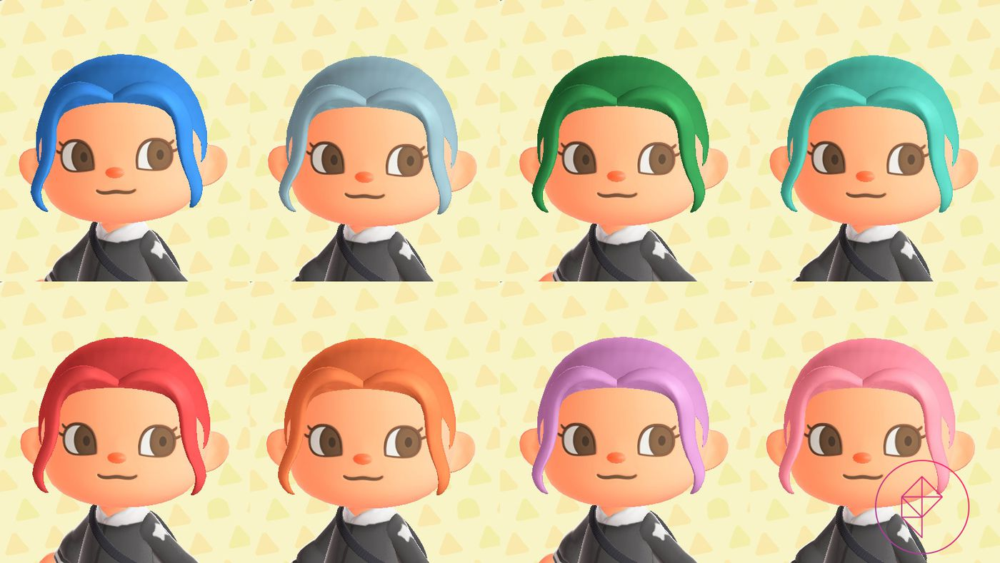
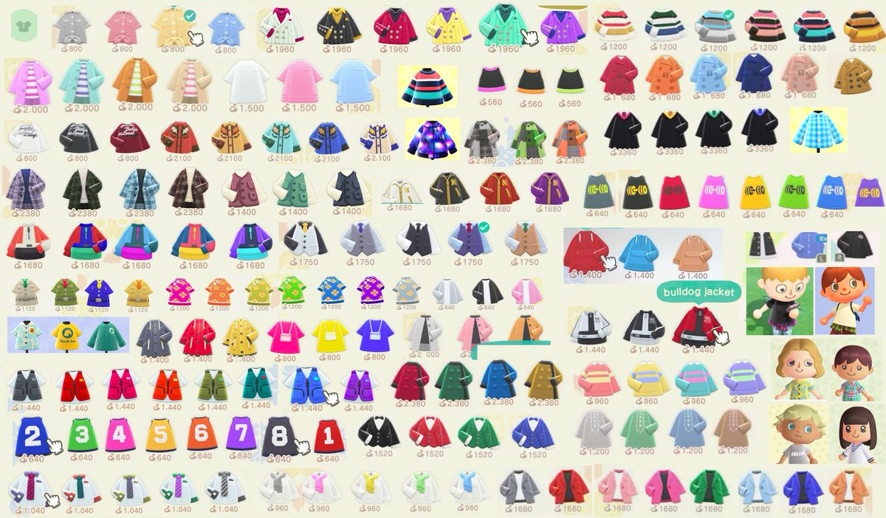

Every Animal Crossing: New Horizons Villager
Animal Crossing: New Horizons features many returning villagers and a few new villagers that can move onto your island - either temporarily or to create a home to live in. There are also many returning characters that act as merchants or provide special features.The list below incorporates all known Villagers. They come from multiple types of personalities and different kinds of animals. Each island town can have up to 10 different kinds of villagers who will make their home there, and you will begin your deserted island adventure with two villagers - see the full list of possible starting villagers here.Character Customization Available at the Start
You can customize everything from the start of the game. Unlike previous Animal Crossing games, you get full control! Instead of answering a cryptic quiz you can customize your character as part of the check-in procedure. You'll be asked your name, birthday, and then have to take a passport picture.Hairstyles
Animal Crossing: New Horizons on Switch has plenty of hair options for those who want to express themselves. With eight styles available in the beginning, and 16 more unlocking later on in the game, there’s a lot to choose from.
Haircolor
When you first use the mirror to change your appearance, six more hairstyles will be made available. Other additional hairstyles unlock for 2,400 Nook Miles each, and eight additional hair colors cost 3,000 Nook Miles each.
 Clothing
In New Horizons, clothing items can be obtained from the Able Sisters, NHnookstop Nook Stop, and various events, as well as being crafted by the player using DIY Recipes. The player can also design their own clothing via the NookPhone.
Clothing consists of 9 different categories:
- Tops
- Bottoms
- Dresses
- Hats
- Accessories
- Socks
- Shoes
- Bags
- Umbrellas
Animal Crossing: New Horizons Gameplay
As in previous installments in the Animal Crossing series, Animal Crossing: New Horizons is a nonlinear life simulation game played in real-time. The player assumes the role of a customizable character who moves to a deserted island after purchasing a deserted island package from Tom Nook, a tanuki character who is a staple of the series. The game proceeds in an open-ended fashion as the player explores the island, and develops it into a community of anthropomorphic animals. Players can collect different items to use as decorations within the game. Like in the 2017 spin-off title Animal Crossing: Pocket Camp for mobile devices, the game introduces a crafting system that allows the player to convert materials into tools and furniture, which can be used to decorate the game's interior and exterior spaces.The game allows the player to customize the appearance of their character at will, and does not lock specific hairstyles or facial features to specific genders. Players are additionally able to select their character's skin color, a feature introduced in the 2015 spin-off title Animal Crossing: Happy Home Designer. Nook Miles, an in-game currency earned by completing various tasks, can be used to purchase premium items. Players are able to invite animals to live on their island, and have the option to choose or influence where the animal constructs their home. The game's weather adjusts to the seasons of the Northern or Southern Hemisphere, depending on the player's real-world location, a first for the Animal Crossing series. Another first is the addition of windy weather, which is expressed in the movement of the leaves on the trees.